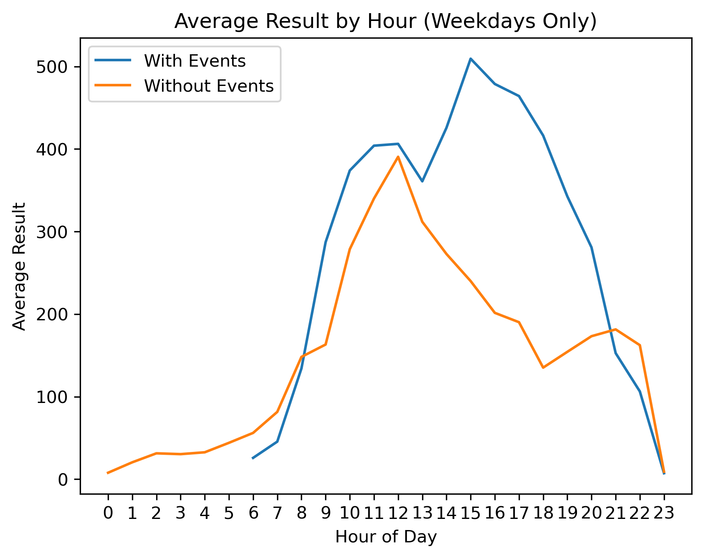
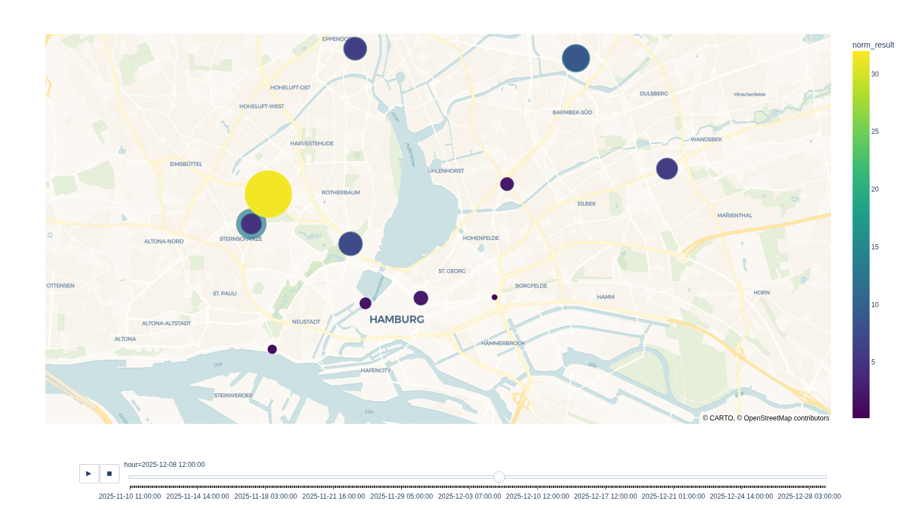
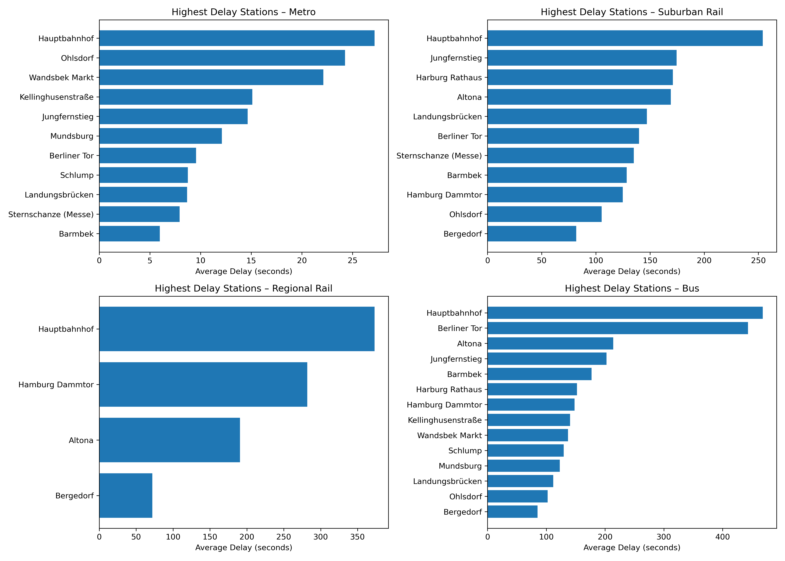
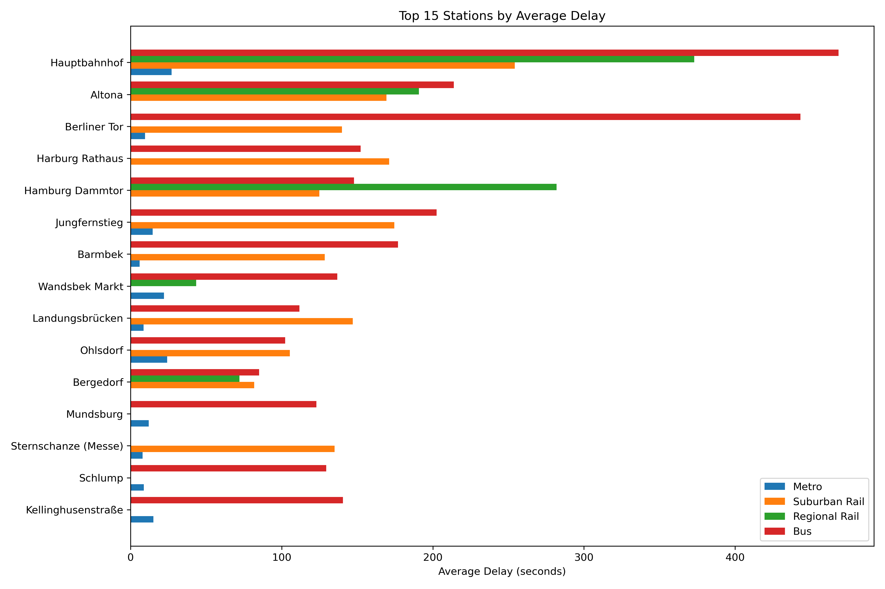
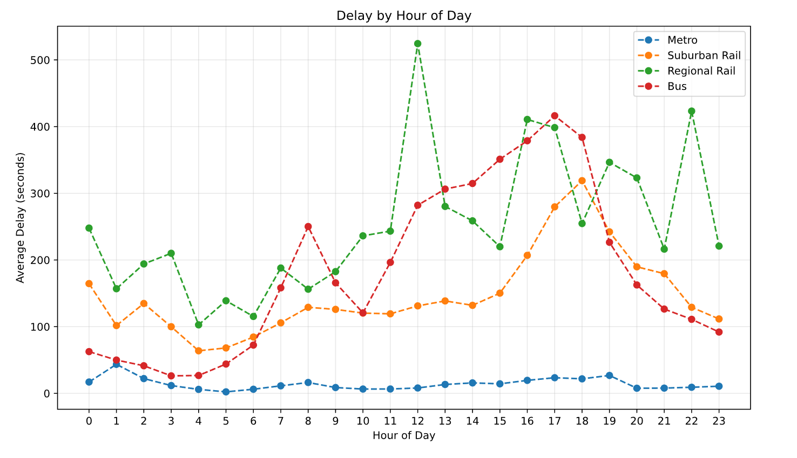
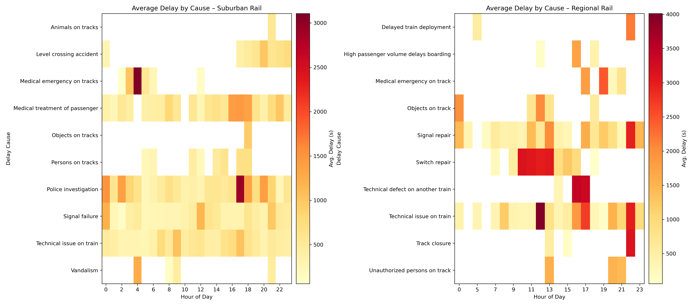
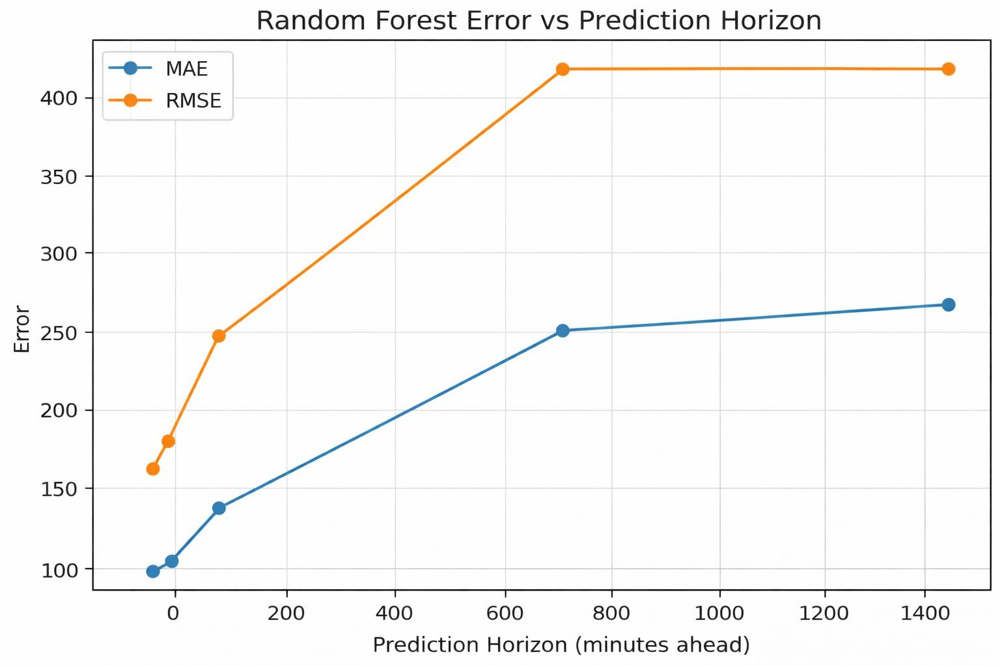
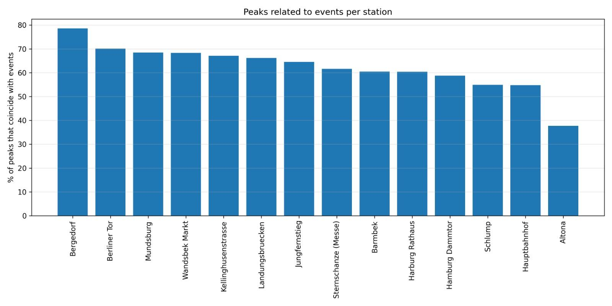

Project Overview
How Hamburg Moves visualizes the pulse of Hamburg — how time, transport, and events shape the city’s rhythm. Using open HVV data, traffic logs, and AI modeling, this project transforms raw numbers into a living story of urban mobility.
The Visual Story
1. Predicting Crowds — Station Altona
Comparison between real passenger counts and machine learning predictions (XGBoost & Random Forest). Both models replicate recurring mobility cycles, showing strong generalization even across holidays. Deviations highlight how unpredictable human behavior adds character to the city’s flow.
.png)
2. When Events Change Everything
Event days rewrite the mobility script. Peaks between 16:00–19:00 show how concerts and sports reshape traffic, pushing commuters into synchronized waves across the network.

3. The City’s Heartbeat — Hamburg Heatmap
Each glowing station reflects normalized crowd activity at midday. Yellow cores represent active hubs like Hauptbahnhof and Jungfernstieg, while purple outskirts remain calm — illustrating density gradients across the city.

4. Where Time Slows Down — Delay by Station
Hauptbahnhof dominates as the delay epicenter, reflecting high congestion and network centrality. Metro shows minimal delays due to isolated tracks, while buses face street-level unpredictability.

5. Unified Delay Overview
All transport systems combined. Bus and Regional Rail lead in average delay — direct consequences of shared road and rail infrastructure. Metro stands out as the most resilient mode.

6. Hourly Delay Patterns
Morning (8:00) and evening (17:00) peaks align with daily commute cycles. Regional Rail shows late-night anomalies, likely due to ICE interference — a signature of shared infrastructure.

7. Why Trains Run Late — Delay by Cause
Suburban Rail delays cluster around medical and police interventions during peak hours. Regional Rail delays, however, are dominated by planned maintenance during working hours — showing how chaos and scheduling coexist.

8. Forecasting Accuracy — Random Forest
MAE and RMSE grow with prediction horizon. Short-term (15 minutes) accuracy is nearly perfect, but long-term forecasts become unreliable. Urban mobility’s complexity defies complete predictability.

9. Peaks and Events
Roughly 80% of passenger peaks align with event timings — confirming that cultural life is one of Hamburg’s strongest mobility drivers.

10. Random Forest Predictions
The Random Forest model accurately tracks daily mobility patterns, predicting human movement cycles with minimal noise deviation.
.png)
11. XGBoost Predictions
XGBoost excels in stability and smooth transitions, effectively minimizing overreaction to outliers or sudden spikes in passenger volume.
.png)
12. Clean vs Predicted (RF)
Comparing cleaned (filtered) data to RF predictions. The orange line mirrors blue trends almost perfectly — proof that noise reduction enhances model alignment.

13. Random Forest Error vs Horizon
As predictions extend into the future, the error increases non-linearly. This demonstrates the trade-off between foresight and reliability in machine learning for transport analytics.

14. Probability of Peaks with and without Events
Stations like Kellinghusenstraße and Wandsbek Markt show much higher event-day peaks, demonstrating how local social events ripple through the public transit system.
.png)
15. Peaks Related to Events per Station
Bergedorf and Berliner Tor lead with almost 80% of their peaks tied to nearby events — confirming how Hamburg’s transport system pulses in sync with its cultural calendar.
.png)